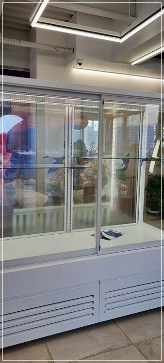
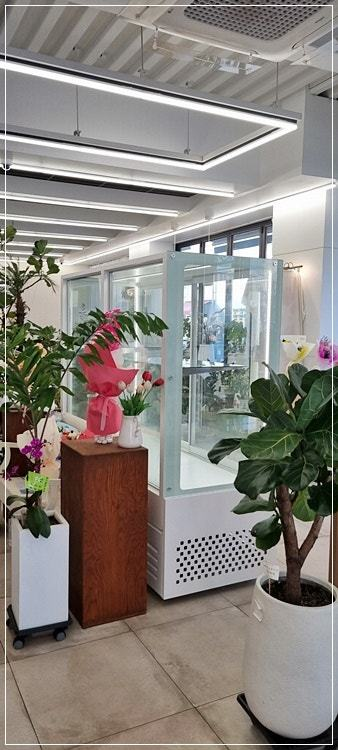
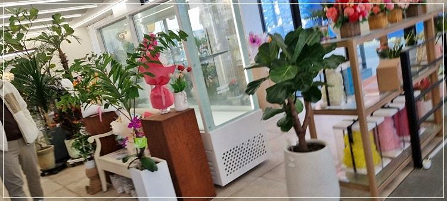
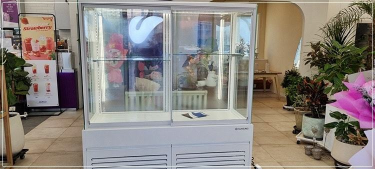
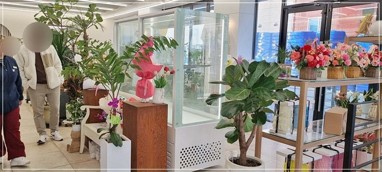
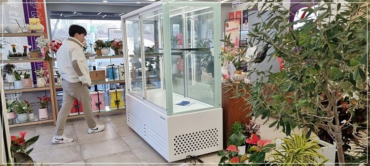
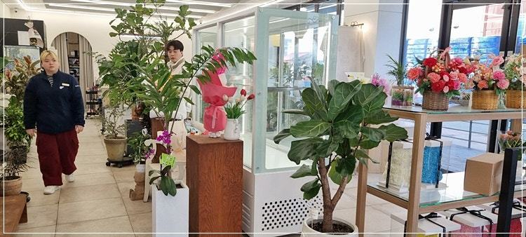
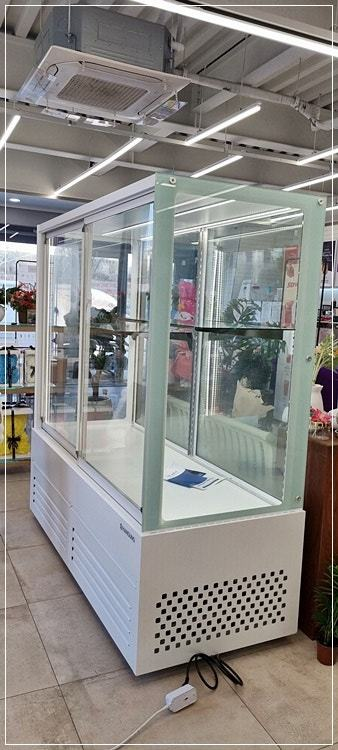

꽃냉장고
꽃냉장고 소음, 소리 종류로 찾는 원인과 점검 순서

꽃냉장고 소음은 대부분 수평이 틀어졌거나, 응축기에 먼지가 쌓였거나, 팬과 배수관에 이물질이 걸린 경우에 생깁니다. 이 세 가지를 먼저 살펴보고도 소리가 이어지면 콤프레셔 점검을 받으시는 게 순서입니다.
안녕하세요. 꽃집 매장에 맞춘 꽃쇼케이스를 설계하고 제작하는 한성쇼케이스입니다.
조용한 꽃집에서 냉장고 소리가 유난히 크게 들리기 시작하면 사장님도 신경이 쓰이고, 꽃다발을 고르시는 손님도 자꾸 그쪽을 돌아보게 됩니다.
꽃집은 음악도 작게 틀어 두는 곳이 많아서 작은 진동음도 금방 티가 나죠.
그렇다고 소리가 날 때마다 고장 접수를 하기도 애매합니다. 어떤 소리는 정상 가동음이고, 어떤 소리는 사장님이 몇 분 만에 바로잡을 수 있는 문제이기 때문입니다.
오늘은 꽃냉장고에서 나는 소리를 종류별로 나눠 원인을 짚고, 매장에서 직접 해 볼 수 있는 점검 순서를 정리해 드리겠습니다.
1. 정상 가동음과 이상 소음 구분하기
냉장고는 설정 온도에 맞추기 위해 콤프레셔가 돌았다 멈췄다를 반복합니다. 가동이 시작될 때 낮게 웅 하는 소리, 냉매가 배관을 돌며 나는 쉭 하는 소리, 멈출 때 한 번 딸깍하는 소리는 정상 범위에 들어갑니다.
문제가 되는 소리는 따로 있습니다. 쇠끼리 부딪히는 덜컹거림, 팬 날개가 무언가를 긁는 소리, 평소보다 훨씬 오래 쉬지 않고 이어지는 가동음이 대표적입니다.
꽃냉장고는 생화를 위해 문을 자주 여닫는 편이라 가동 시간이 원래 길 수 있으니, 평소 소리와 비교해서 판단하시는 게 정확합니다.
- 소리가 나는 시간대와 길이를 메모해 두세요.
- 문을 닫고 몇 분 뒤에도 소리가 계속되는지 확인하세요.
- 소리가 나는 위치가 위쪽인지 아래 기계실인지 귀로 짚어 보세요.
2. 덜컹거림과 떨림은 수평부터
꽃집은 물 양동이를 옮기고 바닥 청소를 자주 하다 보니 냉장고가 조금씩 밀리는 일이 흔합니다. 다리 한쪽이 들뜨면 콤프레셔 진동이 몸체 전체로 전해져 유리문까지 함께 떨립니다.
바닥에 물기가 남아 있거나 타일 이음매 위에 다리가 걸쳐 있어도 같은 증상이 생깁니다. 수평계가 없다면 스마트폰 수평 기능으로도 충분히 확인하실 수 있고, 조절 다리를 돌려 네 모서리가 고르게 닿게 맞춰 주시면 됩니다.
벽에 너무 바짝 붙어 있는 경우도 살펴보세요. 기계실에서 나온 진동이 벽을 타고 울리면서 실제보다 크게 들리기도 합니다.


3. 웅웅거림이 길어지면 응축기 먼지
꽃집에는 포장지 부스러기, 꽃가루, 잘라 낸 잎과 줄기에서 나온 미세한 먼지가 생각보다 많이 날립니다.
이 먼지가 응축기 핀 사이에 쌓이면 열을 제대로 못 빼내고, 콤프레셔는 온도를 맞추려고 더 오래, 더 힘들게 돌아갑니다.
결국 가동음이 커지고 쉬는 시간이 짧아지죠. 전원을 끈 상태에서 부드러운 솔이나 청소기로 응축기 먼지를 털어 내는 것만으로도 소리가 줄어드는 경우가 많습니다.
꽃 작업대가 냉장고 기계실 쪽에 붙어 있다면 청소 주기를 더 짧게 잡아 주세요.
4. 물 흐르는 소리와 긁는 소리는 배수관·팬
꽃냉장고는 생화를 위해 습도를 높게 유지하다 보니 제상수가 많이 생깁니다. 배수관에 꽃잎이나 잎 조각이 걸리면 물이 고였다가 한꺼번에 내려가면서 꿀렁거리는 소리가 나고, 심하면 바닥으로 물이 새기도 합니다.
내부 팬 쪽에서 긁는 소리가 난다면 팬 주변에 성에가 붙었거나, 높이 꽂아 둔 꽃대나 포장 비닐이 팬 커버에 닿은 경우를 먼저 의심해 보세요.
진열 높이를 조금 낮추는 것만으로 해결되기도 합니다.
이 세 가지를 다 점검했는데도 소리가 계속되거나, 소리와 함께 내부 온도가 잘 안 내려간다면 그때는 콤프레셔나 냉매 계통 문제일 수 있으니 직접 분해하지 마시고 A/S를 요청해 주세요.
- 배수구에 꽃잎·잎 조각이 걸려 있지 않은지 보세요.
- 팬 커버 앞에 꽃대나 비닐이 닿지 않게 진열하세요.
- 온도가 함께 오르면 바로 A/S를 접수하세요.
체크리스트
- 소리 종류와 나는 시간대 기록
- 조절 다리 수평과 벽과의 간격
- 응축기 핀 사이 먼지
- 배수구 꽃잎·잎 조각 막힘
- 팬 커버 앞 꽃대·비닐 간섭
- 소음과 함께 온도 상승 여부
뒷벽 통유리 꽃쇼케이스를 들인 '오늘의 꽃' 매장
가정의 달 성수기를 앞두고 '오늘의 꽃'이라는 꽃집에 뒷벽까지 통유리로 된 꽃쇼케이스를 설치했습니다.
영업 담당과 사장님이 미리 만나 매장 분위기와 필요한 크기를 정한 뒤 제작에 들어갔고, 완성 후에는 설치 기사님들이 매장 한쪽 벽면에 맞춰 자리를 잡았습니다.
뒷벽이 유리라 매장 어느 쪽에서도 꽃이 보이는 구조인 만큼, 기계 소리와 진동이 손님 쪽으로 전해지지 않도록 설치 위치와 수평을 꼼꼼히 맞췄습니다.
이 제품도 출고 전 119가지 품질 테스트를 거쳤고, 사전 미팅과 자체 제작 과정을 거치느라 설치까지 기간이 조금 걸리는 편이라 일정에 여유를 두고 문의하시길 권해 드립니다.










자주 묻는 질문
밤에만 소리가 더 크게 들리는데 고장인가요?
매장이 조용해지면 같은 가동음도 더 크게 들립니다. 낮과 밤의 소리 크기보다는 가동 시간이 평소보다 길어졌는지, 온도가 잘 유지되는지를 기준으로 판단해 보세요.
응축기 청소는 얼마나 자주 해야 하나요?
꽃가루와 포장지 먼지가 많은 매장이라면 자주 확인하시는 게 좋습니다. 먼지가 눈에 보일 정도로 쌓였다면 청소할 때가 된 것이고, 반드시 전원을 끈 뒤에 작업해 주세요.
소음이 계속되면 어디로 연락하면 되나요?
한성쇼케이스는 전국 240여 개 A/S 센터를 운영하고 있습니다. 대표전화 031-986-2458로 증상과 소리가 나는 위치를 알려 주시면 점검 일정을 잡아 드립니다.
매장 조건에 맞춰 만드는 한성쇼케이스
원하시는 제품 사진과 설치할 공간 사진만 보내 주셔도 매장에 맞는 구성을 추천해 드립니다.
- 전국 240여 개 A/S 전담 센터 운영
- 본사 대량 자재 매입으로 품질 대비 합리적인 가격
- 유럽제·삼성 냉각 콤프레셔 적용
- 국내 최초 쇼케이스 전문 디자이너 상주
매장 폭과 원하는 진열 구성을 알려 주세요. 실측과 견적을 안내해 드립니다.
031-986-2458